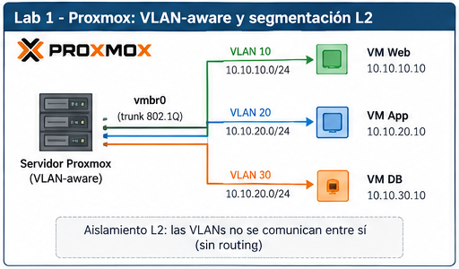
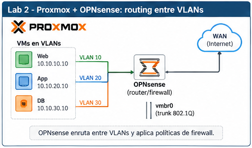
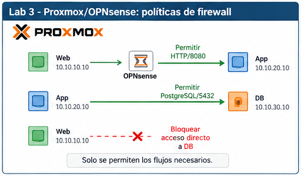
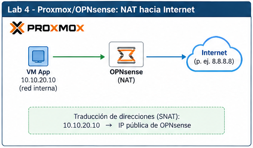
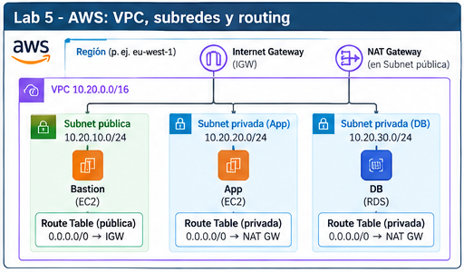
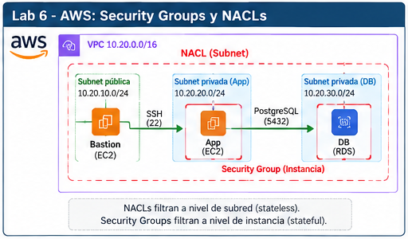
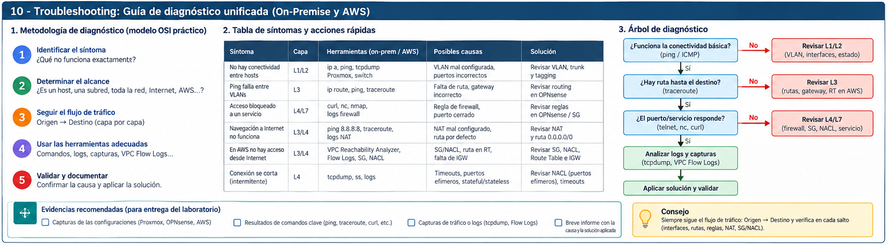

UD2 · Laboratorios progresivos de segmentación, routing y seguridad¶
Objetivo general: construir y diagnosticar una arquitectura de red progresiva, primero en Proxmox + OPNsense y después en AWS, aplicando siempre la secuencia:
Predecir → desplegar → observar → validar → romper → diagnosticar → corregir → explicar
0. Arquitectura y progresión de la unidad¶
La unidad parte de una red virtual sencilla y evoluciona hasta una arquitectura de tres capas con segmentación, routing, firewall, NAT y controles de seguridad distribuidos en AWS.
LAB 1
Proxmox
VLAN + segmentación L2
↓
LAB 2
Proxmox + OPNsense
routing inter-VLAN
↓
LAB 3
OPNsense
firewall stateful + mínimo privilegio
↓
LAB 4
OPNsense
NAT + salida a Internet
↓
LAB 5
AWS
VPC + subnets + route tables + IGW + NAT Gateway
↓
LAB 6
AWS
Security Groups + NACL + troubleshooting
Filosofía de trabajo¶
No se considera que una práctica esté terminada cuando aparece el primer ping correcto.
Cada laboratorio debe responder:
- ¿Qué debería ocurrir antes de configurar?
- ¿Qué componente toma cada decisión?
- ¿Cómo demostramos que funciona?
- ¿Qué ocurre si rompemos una parte?
- ¿Cómo aislamos la causa?
- ¿Qué evidencia demuestra la causa raíz?
LAB 1 · Segmentación VLAN en Proxmox¶
1. Objetivo¶
Transformar una red virtual plana en tres dominios de capa 2 independientes y demostrar mediante observación y captura de tráfico que las VLAN separan broadcast domains aunque todas las VM compartan el mismo bridge físico/virtual.

2. Punto de partida¶
En esta primera fase no utilizamos:
Configuración inicial de Proxmox¶
auto lo
iface lo inet loopback
iface eno1 inet manual
auto vmbr0
iface vmbr0 inet dhcp
bridge-ports eno1
bridge-stp off
bridge-fd 0
auto vmbr1
iface vmbr1 inet manual
bridge-ports none
bridge-stp off
bridge-fd 0
3. Fase 0 · Red plana¶
Configurar temporalmente:
Todas las VM conectadas a:
sin gateway y sin VLAN Tag.
Predecir¶
Antes de probar:
- ¿WEB puede comunicarse con APP?
- ¿Necesitamos router?
- ¿Necesitamos gateway?
- ¿Qué dirección MAC buscará WEB mediante ARP?
Validar¶
En Proxmox:
El objetivo es observar:
4. Fase 1 · Convertir vmbr1 en VLAN-aware¶
Modificar:
auto vmbr1
iface vmbr1 inet manual
bridge-ports none
bridge-stp off
bridge-fd 0
bridge-vlan-aware yes
bridge-vids 10 20 30
La red de gestión de Proxmox continúa en:
El laboratorio utiliza:
5. Fase 2 · Asignar VLAN¶
Direcciones:
Todavía:
Predicción¶
| Origen | Destino | ¿Debe funcionar? |
|---|---|---|
| WEB | APP | no |
| WEB | DB | no |
| APP | DB | no |
6. Fase 3 · Demostrar misma VLAN¶
Crear temporalmente:
Resultado esperado:
sin router y sin gateway.
Conclusión:
Una VLAN separa dominios de capa 2.
7. Observación¶
En Proxmox:
bridge vlan show
bridge fdb show br vmbr1
tcpdump -eni vmbr1
tcpdump -eni vmbr1 vlan
tcpdump -eni vmbr1 vlan 10
En las VM:
La visibilidad exacta de la etiqueta 802.1Q puede depender del punto de captura y de mecanismos de offloading.
8. Fallos provocados¶
FALLO A · VLAN incorrecta¶
Cambiar APP:
manteniendo:
Diagnosticar la incoherencia entre:
FALLO B · Misma red IP, VLAN distinta¶
WEB considera APP local e intenta ARP directamente.
El ARP no atraviesa la frontera VLAN.
FALLO C · Bridge incorrecto¶
Conectar DB a:
en lugar de:
9. Orden de troubleshooting¶
1. interfaz UP
2. IP
3. máscara
4. bridge
5. VLAN Tag
6. vmbr1 VLAN-aware
7. VLAN permitida
8. FDB
9. ARP
10. dominio L2
10. Evidencias¶
- configuración de
vmbr1; bridge vlan show;bridge fdb show;- captura ARP;
- comunicación positiva dentro de la misma VLAN;
- comunicación negativa entre VLAN;
- diagnóstico de al menos un fallo.
11. Estado final¶
Eliminar WEB-02.
Sin gateway.
Resultado:
Antes de configurar el router debemos demostrar que la infraestructura de capa 2 transporta correctamente cada VLAN.
LAB 2 · Routing inter-VLAN con OPNsense¶
1. Objetivo¶
Introducir un router dedicado y observar cómo un paquete atraviesa dos dominios L2 diferentes.
2. Arquitectura¶
RED DEL AULA
DHCP + Internet
│
vmbr0
│
WAN OPNsense
│
┌────────┴────────┐
│ OPNsense │
│ Router / FW │
└────────┬────────┘
│
TRUNK 802.1Q
│
vmbr1 VLAN-aware
┌─────────────┼─────────────┐
│ │ │
VLAN10 VLAN20 VLAN30
│ │ │
WEB APP DB
OPNsense¶
El trunk debe transportar:
Interfaces VLAN¶

VM:
Warning
Si la WAN de OPNsense recibe una dirección RFC1918 desde la red del aula, puede ser necesario adaptar la opción de bloqueo de redes privadas en WAN para este entorno de laboratorio.
Note
La red física debe permitir varias MAC detrás del puerto de Proxmox: al menos la del host y la de la WAN de OPNsense.
3. Comprobar primero capa 2¶
Antes de probar routing:
Si falla alguno:
antes que routing.
4. Reglas temporales¶
Para estudiar primero routing, utilizar temporalmente una política permisiva interna:
Se eliminará en LAB 3.
5. Packet path WEB → APP¶
WEB calcula:
Resultado:
WEB consulta:
y utiliza:
como next hop.
ARP¶
WEB resuelve:
no:
Primera trama¶
En OPNsense¶
OPNsense:
- recibe la trama por VLAN10;
- elimina la cabecera L2;
- consulta routing;
- selecciona la interfaz APP;
- decrementa TTL;
- resuelve la MAC de APP;
- genera una nueva trama en VLAN20.
Segunda trama¶
Conclusión:
El paquete IP atraviesa el router; la trama Ethernet no.
6. Herramientas¶
En Proxmox:
En OPNsense:
7. Fallos provocados¶
Gateway incorrecto¶
Observar:
Máscara incorrecta¶
WEB considera 10.10.20.10 local e intenta ARP directamente.
APP sin gateway¶
El request puede llegar, pero falla el retorno.
VLAN OPNsense incorrecta¶
Diagnosticar primero conectividad local OPNsense↔APP.
Firewall bloqueando¶
Mantener routing correcto y eliminar temporalmente la regla permisiva de WEB.
Conclusión:
8. Evidencias¶
- interfaces VLAN de OPNsense;
ip route;ip route get;- neighbor table;
- captura ARP del gateway;
- captura del mismo flujo en VLAN10 y VLAN20;
- fallo de routing;
- fallo de firewall diferenciado.
9. Estado final¶
Primero demostramos que existe un camino. Después decidiremos quién tiene derecho a utilizarlo.
LAB 3 · Firewall stateful y mínimo privilegio con OPNsense¶
1. Objetivo¶
Pasar de una red completamente enrutable a una política de mínimo privilegio.
2. Política de referencia¶
| Origen | Destino | Servicio | Acción |
|---|---|---|---|
| Internet | WEB | TCP/443 | allow |
| Internet | APP | any | deny |
| Internet | DB | any | deny |
| WEB | APP | TCP/8080 | allow |
| WEB | DB | any | deny |
| APP | DB | TCP/5432 | allow |
| DB | WEB/APP | nuevas conexiones | deny |

3. Preparar servicios¶
APP:
DB:
Este segundo servicio solo sirve para validar transporte TCP sobre 5432.
4. Eliminar reglas amplias¶
Eliminar:
y volver a una política implícita de denegación.
5. Regla WEB → APP¶
En interfaz WEB:
Action: Pass
Protocol: TCP
Source: WEB net
Destination: APP net
Destination port: 8080
Description: WEB_to_APP_8080
Validar:
Positivo:
Negativos:
6. Regla APP → DB¶
En interfaz APP:
Action: Pass
Protocol: TCP
Source: APP net
Destination: DB net
Destination port: 5432
Description: APP_to_DB_5432
Validar:
7. Stateful firewall¶
Una respuesta a:
no necesita una regla inversa independiente.
OPNsense mantiene el estado de la conexión.
Pero:
como nueva conexión sigue necesitando autorización.
8. Tabla de estados¶
Generar tráfico y consultar los estados.
Punto importante:
Modificar una regla no implica necesariamente que desaparezca inmediatamente un estado ya creado.
Si una prueba no se comporta como se espera:
- revisar reglas;
- revisar state table;
- eliminar el estado si corresponde;
- repetir.
9. Logs¶
Provocar:
y observar:
Diferencia:
10. Aliases¶
Crear conceptualmente:
Mejora la legibilidad y expresa intención.
11. Fallos provocados¶
- regla demasiado amplia;
Source:any;- puerto incorrecto;
- servicio detenido;
- estado antiguo.
12. Validación final¶
| Origen | Destino | Puerto | Esperado |
|---|---|---|---|
| WEB | APP | 8080 | ✓ |
| WEB | APP | 22 | ✕ |
| WEB | DB | 5432 | ✕ |
| APP | DB | 5432 | ✓ |
| APP | DB | 22 | ✕ |
| APP | WEB | 8080 | ✕ |
| DB | APP | 8080 | ✕ |
13. Idea clave¶
Una prueba de seguridad debe demostrar tanto que lo permitido funciona como que lo prohibido no funciona.
LAB 4 · NAT, salida a Internet y troubleshooting con OPNsense¶
1. Objetivo¶
Dar salida a Internet a redes privadas y distinguir:
cuando el síntoma superficial es el mismo:
“No tengo Internet.”
2. Arquitectura¶

3. Validar WAN primero¶
Antes de investigar NAT:
Si OPNsense no tiene Internet:
no:
4. Routing APP¶
Esperado:
5. SNAT¶
Antes:
Después de NAT:
6. PAT¶
Varios hosts pueden compartir la WAN:
7. Outbound NAT¶
Trabajar primero con:
y analizar conceptualmente:
8. Cadena de validación¶
Ejemplo:
9. Observar NAT¶
Captura en APP-side:
Captura WAN:
10. Doble NAT¶
Posible arquitectura real del aula:
Es válido para salida, aunque complica:
11. Política de salida¶
Ejemplo de endurecimiento:
12. Cuatro fallos con el mismo síntoma¶
Gateway incorrecto¶
Diagnóstico:
Firewall bloqueando¶
Gateway y routing correctos, pero:
NAT ausente¶
Routing y firewall correctos, pero el tráfico no aparece traducido adecuadamente en WAN.
DNS roto¶
Causa:
13. SNAT vs DNAT¶
DNAT / Port Forward se deja para una unidad posterior de publicación segura.
14. Evidencias¶
- WAN de OPNsense;
- routing de APP;
- acceso al gateway;
- acceso IP externo;
- DNS;
- HTTP/HTTPS;
- captura pre-NAT;
- captura post-NAT;
- diagnóstico de un fallo de NAT;
- diagnóstico de un fallo DNS.
15. Idea clave¶
NAT no crea conectividad, no decide rutas y no sustituye al firewall. Traduce direcciones dentro de una arquitectura que ya debe estar correctamente enrutada y autorizada.
LAB 5 · Reconstrucción de la arquitectura en AWS¶
1. Objetivo¶
Reconstruir en AWS la intención de la arquitectura on-premise.
No buscamos equivalencias tecnológicas exactas.
2. Arquitectura¶
Subnets:
Una sola AZ para no mezclar todavía alta disponibilidad.

3. Equivalencias funcionales¶
| Necesidad | Proxmox/OPNsense | AWS |
|---|---|---|
| red virtual | bridge/infra virtual | VPC |
| segmentación | VLAN | subnet |
| routing | OPNsense | VPC routing + Route Tables |
| salida pública | WAN | Internet Gateway |
| NAT saliente | OPNsense NAT | NAT Gateway |
| firewall | OPNsense | SG / NACL |
| servidor | VM | EC2 |
Warning
VLAN ≠ AWS subnet
4. Crear VPC¶
5. Crear subnets¶
No calificarlas como públicas o privadas hasta estudiar su routing.
6. Route Tables¶
Crear:
Asociar:
Todas contienen:
7. Internet Gateway¶
Crear y asociar:
Añadir a WEB:
Por tanto:
8. EC2¶
WEB puede disponer de IPv4 pública si el diseño lo requiere.
APP y DB:
Recordatorio:
9. NAT Gateway¶
Crear una NAT Gateway pública en:
con:
Esperar:
Añadir a APP:
DB permanece:
sin default route.
10. Packet path APP → Internet¶
11. Longest Prefix Match¶
APP → DB:
APP → Internet:
12. Fallos provocados¶
- APP asociada a
RT-WEB-PUBLIC; - eliminar ruta a NAT;
- NAT Gateway en una arquitectura pública incompleta;
- IGW no asociado;
- WEB sin IPv4 pública;
- DB con NAT accidental.
Uno de los objetivos es detectar:
y también:
13. Troubleshooting APP sin Internet¶
1. subnet correcta
2. Route Table asociada
3. existe 0.0.0.0/0
4. target correcto
5. NAT Available
6. NAT en public subnet
7. public subnet con ruta al IGW
8. IGW asociado
9. SG/NACL
10. SO/DNS/aplicación
14. Estado final¶
WEB
→ public subnet
→ IGW
APP
→ private subnet
→ NAT Gateway
→ IGW
DB
→ isolated subnet
→ solo local
15. Idea clave¶
En cloud siguen existiendo los mismos problemas de direccionamiento, routing, salida y seguridad; cambia la forma en que la plataforma los implementa.
LAB 6 · Security Groups, NACL y troubleshooting en AWS¶
1. Objetivo¶
Aplicar en AWS la misma política de mínimo privilegio definida en OPNsense y comparar controles stateful y stateless.

2. Política¶
3. Crear Security Groups¶
Asociar:
4. SG-WEB¶
Inbound:
Evitar:
5. SG-APP¶
Inbound:
Ventaja:
en lugar de:
6. SG-DB¶
Inbound:
7. Servicios¶
APP:
DB:
8. Validación¶
9. Stateful Security Groups¶
Respuesta a:
queda permitida como parte de una conexión existente.
Pero:
como nueva conexión no queda autorizada automáticamente.
10. Network ACL¶
Introducir:
asociada a:
Características:
11. Fallo de retorno¶
Permitir inbound:
pero no permitir adecuadamente el retorno por puertos efímeros.
Resultado:
Causa:
Corregir con una regla outbound adecuada para los puertos efímeros utilizados por los clientes.
12. Orden de reglas¶
Ejemplo:
Para 10.0.10.50, la regla 90 debe ganar.
Si invertimos:
el DENY puede no llegar a evaluarse.
13. Packet path mental¶
EC2-WEB
↓
SG-WEB outbound
↓
NACL-WEB outbound
↓
Route Table
↓
NACL-APP inbound
↓
SG-APP inbound
↓
EC2-APP
Retorno:
14. Fallos provocados¶
- SG source incorrecto;
- puerto SG incorrecto;
- SG demasiado amplio;
- NACL sin retorno;
- DENY/ALLOW en orden incorrecto;
- servicio detenido;
- exceso de privilegio.
15. Troubleshooting WEB → APP:8080¶
1. EC2 activas
2. servicio APP
3. IP destino
4. subnets
5. Route Tables
6. SG-APP
7. asociaciones SG
8. NACL inbound
9. NACL outbound / retorno
10. orden de reglas
11. firewall local SO
16. Validación final¶
| Origen | Destino | Puerto | Resultado |
|---|---|---|---|
| Internet | WEB | 443 | ✓ |
| Internet | APP | 8080 | ✕ |
| Internet | DB | 5432 | ✕ |
| WEB | APP | 8080 | ✓ |
| WEB | APP | 22 | ✕ |
| WEB | DB | 5432 | ✕ |
| APP | DB | 5432 | ✓ |
| APP | DB | 22 | ✕ |
| DB | APP | 8080 | ✕ |
17. Idea clave¶
Security Group
→ stateful
→ recurso
→ allow
→ referencia otros SG
NACL
→ stateless
→ subnet
→ allow/deny
→ reglas ordenadas
Si la ida parece correcta pero la sesión no se establece, debemos reconstruir también el camino de retorno.
7. Reto integrador final¶
El profesor introduce una combinación de errores en cualquiera de las dos plataformas.
Ejemplo on-premise¶
Posibles causas:
Ejemplo AWS¶
Posibles causas:
Restricción¶
No se permite:
Cada modificación debe derivarse de una hipótesis.
8. Plantilla común de troubleshooting¶

| Campo | Contenido |
|---|---|
| Requisito esperado | |
| Síntoma | |
| Alcance | |
| Hipótesis 1 | |
| Evidencia | |
| Hipótesis descartada | |
| Hipótesis 2 | |
| Evidencia decisiva | |
| Causa raíz | |
| Corrección mínima | |
| Prueba positiva | |
| Prueba negativa | |
| Riesgo residual |
9. Evidencias mínimas de la secuencia¶
El alumnado debe entregar:
- arquitectura final Proxmox/OPNsense;
bridge vlan show;- captura ARP;
- packet path WEB→APP;
- reglas OPNsense finales;
- prueba positiva y negativa;
- captura pre/post NAT;
- arquitectura AWS;
- Route Tables;
- Security Groups;
- NACL y fallo de retorno;
- al menos dos informes de causa raíz.
10. Cierre conceptual de la UD2¶
La secuencia completa puede resumirse así:
VLAN
↓
separa L2
ROUTING
↓
conecta L3
FIREWALL
↓
autoriza
NAT
↓
traduce
ROUTE TABLE
↓
selecciona camino en AWS
SECURITY GROUP
↓
control stateful por recurso
NACL
↓
control stateless por subnet
Y las ideas fundamentales que deben quedar consolidadas son:
Segmentar no es filtrar.
Enrutar no es permitir.
NAT no es firewall.
Que exista un camino no significa que el tráfico esté autorizado.
Una configuración no se considera comprendida porque funcione, sino cuando podemos predecirla, demostrarla y diagnosticarla cuando deja de funcionar.